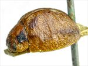

Click on images to enlarge
{kind=link}

Paropsis nervosa type specimen, lateral view

Paropsis nervosa type specimen, dorsal view
Name
Trachymela nervosa (Clark, 1865)
Type specimen
Location: BMNH
Label data: “TYPE”, “W. Austral.”, “67-56”, “nervosa Clark”
Mounted on card, sex unknown; size: 6.1 x 4.8 x 2.8 mm; A-A: 1.04 mm, HCE/BL: 23.7% (estimated from photo).
Elytra with transverse weal near middle, other transverse ridges are also present, verrucae are present in apical third; pronotum with a broad black band behind eyes, two black spots on head, a slight darkening above humeral callus.
Notes
The type specimen of T. nervosa is very similar in sculpture and markings to a typical Ta10. It is just slightly larger (6.1 mm, carded specimen, sex unknown), though may actually be slightly shorter if the pronotum is extended from the mesosternum (which is frequently the case in carded specimens). Clark gives its length as 2 3/4 lines (= 5.82 mm), which would still make it a rather large Ta10. It is probably more likely to be one of the other species in this group with a central transverse weal (such as Ta231 or Ta199).
Copyright © 2026. All rights reserved.